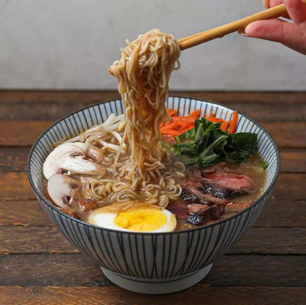

Beef Miso Ramen
This homemade teriyaki chicken recipe is quick and easy to make with chicken thighs.
The flavors of ginger, garlic, and sesame in the sticky sauce will surely hit the spot! Serve over hot rice.

Ingredients
- 1 (8 ounce) beef sirloin steak
- ½ cup gluten-free soy sauce (tamari)
- 1 teaspoon coconut oil
- 4 cups beef broth
- 2 teaspoons miso paste
- 1 teaspoon minced garlic
- 1 teaspoon sesame oil
- 2 (3 ounce) packages ramen noodles
- salt and ground black pepper to taste
Directions
Step 1
Combine steak and soy sauce in a plastic container with a lid. For best flavor results,
marinate in the refrigerator for 2 hours.
Step 2
Remove steak from the marinade and shake off excess. Discard the remaining marinade.
Step 3
Heat coconut oil in a skillet over medium-high heat. Add steak and cook until firm and reddish-pink and juicy in the center,
3 to 4 minutes per side. An instant-read thermometer inserted into the center
should read 130 degrees F (54 degrees C) for medium-rare.
Remove from skillet and allow to rest for 10 minutes.
Step 4
While the steak is resting, combine broth, miso paste, garlic, and sesame oil in a saucepan over medium heat;
bring to a boil. Once broth is at a slow boil, add ramen noodles. Cook until noodles are soft, about 3 minutes.
Season with salt and pepper.
Step 5
Transfer broth and noodles to 2 bowls. Slice steak and place on top.